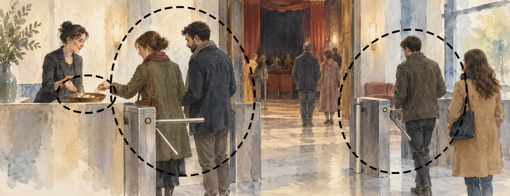

Arquitetura de APIs
Seis estilos de API: REST, GraphQL, gRPC, Webhooks, SSE e WebSockets
Compare REST, GraphQL, gRPC, webhooks, SSE e WebSockets por direção do fluxo, cliente, cache, garantias, falhas e custo operacional.
Artigos para entender sistemas distribuídos, observabilidade e resiliência — dos fundamentos à prática.
Arquitetura de APIs
Compare REST, GraphQL, gRPC, webhooks, SSE e WebSockets por direção do fluxo, cliente, cache, garantias, falhas e custo operacional.

Resiliência
Um guia técnico sobre Bulkhead: fronteiras de isolamento, orçamentos de capacidade, células, pools dedicados, observabilidade, trade-offs e adoção incremental.

Resiliência
Um guia técnico para dimensionar taxa e rajada, comparar Token Bucket e Leaky Bucket e aplicar limites corretos em APIs distribuídas.

Segurança · Redes · Sistemas distribuídos
Um guia do handshake ao workload identity: X.509, SAN, trust anchors, SPIFFE, rotação, proxies, autorização e falhas comuns de mTLS entre serviços.
Resiliência · Sistemas distribuídos
Entenda como Hedged Requests reduzem p99 ao duplicar apenas a cauda, como calcular o custo, escolher o delay e impedir que a redundância vire sobrecarga.

Confiabilidade · Sistemas distribuídos · Observabilidade
Um guia prático para desenhar experimentos de chaos engineering com hipótese, estado estável, blast radius, guardrails, observabilidade e recuperação.
Nenhum artigo encontrado. Tente outro termo.